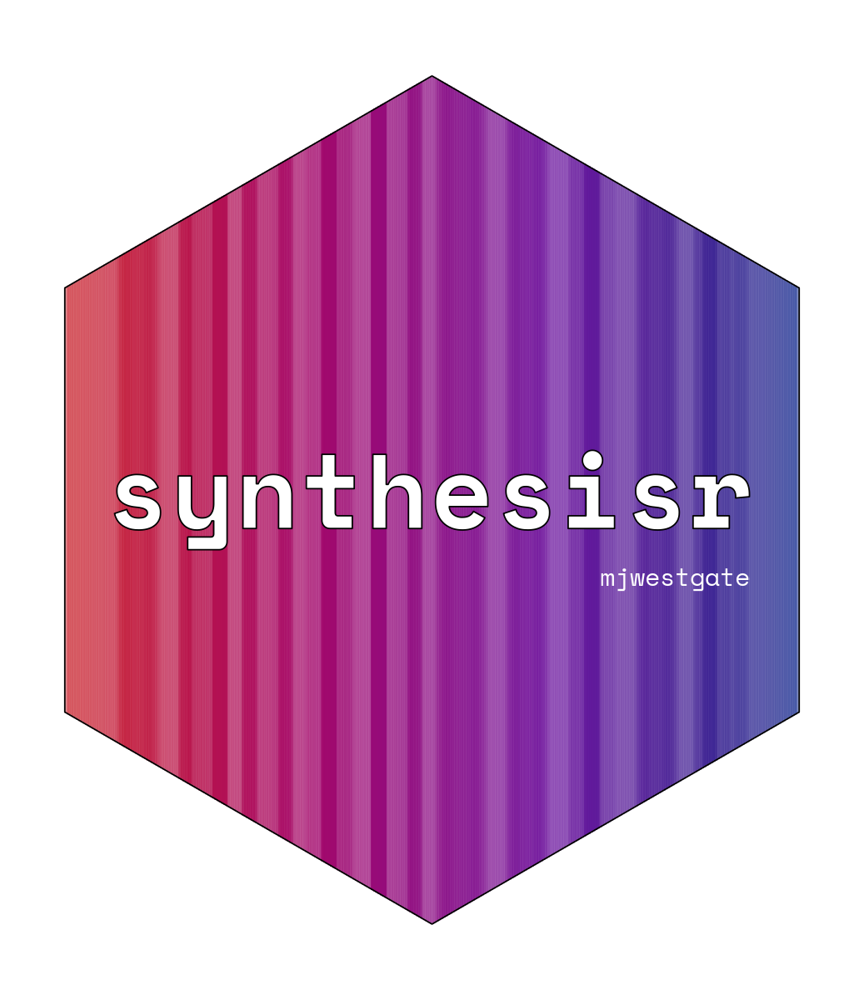

Export data to a bibliographic format
write_refs.RdThis function exports data.frames containing bibliographic information to either a .ris or .bib file.
Usage
write_refs(x, file, format = "ris", tag_naming = "synthesisr", write = TRUE)
write_bib(x)
write_ris(x, tag_naming = "synthesisr")Arguments
- x
Either a data.frame containing bibliographic information or an object of class bibliography.
- file
filename to save to.
- format
What format should the data be exported as? Options are ris or bib.
- tag_naming
what naming convention should be used to write RIS files? See details for options.
- write
Logical should a file should be written? If FALSE returns a
list.
Value
This function is typically called for it's side effect of writing a
file in the specified location and format. If write is FALSE, returns
a character vector containing bibliographic information in the specified
format.
Examples
eviatlas <- c(
"TY - JOUR",
"AU - Haddaway, Neal R.",
"AU - Feierman, Andrew",
"AU - Grainger, Matthew J.",
"AU - Gray, Charles T.",
"AU - Tanriver-Ayder, Ezgi",
"AU - Dhaubanjar, Sanita",
"AU - Westgate, Martin J.",
"PY - 2019",
"DA - 2019/06/04",
"TI - EviAtlas: a tool for visualising evidence synthesis databases",
"JO - Environmental Evidence",
"SP - 22",
"VL - 8",
"IS - 1",
"SN - 2047-2382",
"UR - https://doi.org/10.1186/s13750-019-0167-1",
"DO - 10.1186/s13750-019-0167-1",
"ID - Haddaway2019",
"ER - "
)
detect_parser(eviatlas) # = "parse_ris"
#> [1] "parse_ris"
df <- as.data.frame(parse_ris(eviatlas))
ris_out <- write_refs(df, format = "ris", file = FALSE)
#> Error in check_filename(file): argument 'file' should be an object of class `character`